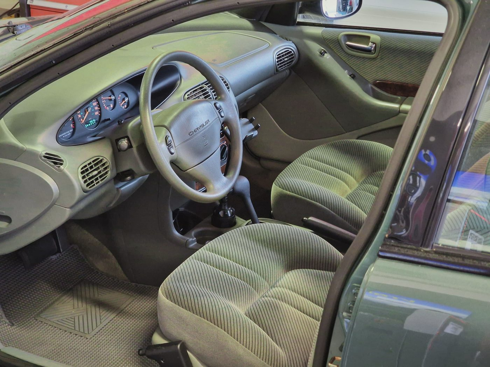

Samochód Roku 1995, który zniknął z ulic
Cirrus był jednym z dwóch pierwszych modeli na platformie JA Chryslera. Razem z bliźniaczym Dodge'em Stratusem zadebiutował jako model na rok 1995. Oba auta powstawały w zakładach Sterling Heights w stanie Michigan, a magazyn Motor Trend przyznał Cirrusowi tytuł Car of the Year 1995. Historię modelu zebrano w opisie Chryslera Cirrusa w Wikipedii.
Wyróżniała go stylistyka cab-forward, czyli kabina przesunięta do przodu. Przednia szyba mocno wysunięta nad komorę silnika, krótkie zwisy i koła rozstawione w narożnikach nadwozia. Rozstaw osi wynosił 108 cali, około 2,74 m, więc wewnątrz było więcej miejsca, niż sugerowała sylwetka. W Europie ten sam samochód sprzedawano jako Chrysler Stratus, dlatego Cirrusa spotyka się u nas głównie jako import z USA. Na amerykański rynek wskazują też zegary tego egzemplarza, wyskalowane w milach na godzinę.
W roku modelowym 1995 Cirrus występował w wersjach LX i LXi, obie z silnikiem V6 2,5 l pochodzenia Mitsubishi. Rok później podstawowa wersja dostała czterocylindrowy silnik 2,4 l. Dziś te auta rzadko widuje się na drogach. Większość zakończyła żywot jako tani, codzienny transport, zanim ktokolwiek zaczął je traktować jak klasyki.
20 tysięcy mil, które widać we wnętrzu
Rozłożone na 31 lat 20 tysięcy mil daje średnio niewiele ponad 640 mil rocznie. To około tysiąca kilometrów, czyli tyle, ile wiele aut przejeżdża w miesiąc. Widać to w miejscach, które zwykle zdradzają prawdziwy przebieg:
- Fotel kierowcy. Welur w cienkie pasy nie ma przetarć na krawędzi siedziska, czyli tam, gdzie przy wsiadaniu zużywa się najszybciej.
- Kierownica. Obręcz bez wybłyszczeń i lepkich miejsc, które zostawiają lata trzymania w dłoniach.
- Deska rozdzielcza i drzwi. Plastiki bez widocznych pęknięć i odbarwień od słońca, nawiewy w komplecie, listwa imitująca orzech na tapicerce drzwi.
- Nadwozie. Lakier z głębokim połyskiem i klosze reflektorów, które nie zżółkły ani nie zmatowiały.
Najbardziej charakterystyczny jest kolor. Szałwiowa zieleń tapicerki i plastików to wzór tamtej dekady: w połowie lat 90. zielenie należały do najpopularniejszych kolorów w amerykańskiej motoryzacji. Razem z ciemnozielonym metalikiem nadwozia daje to spójność, jakiej dzisiejsze szaro-czarne wnętrza raczej nie oferują.

Niski przebieg to nie wszystko
Auto, które przez trzy dekady przejechało tak mało, rzadko jeździło regularnie. A postój też zużywa samochód, tylko inaczej niż jazda. Przy takim egzemplarzu warto sprawdzić:
- Opony. Mogą mieć pełny bieżnik i jednocześnie stwardniałą, popękaną gumę. Liczy się data produkcji z kodu DOT, nie tylko głębokość bieżnika.
- Płyn i przewody hamulcowe. Płyn chłonie wilgoć niezależnie od przebiegu, a gumowe przewody starzeją się z wiekiem.
- Uszczelnienia i pasy napędowe. Guma wysycha z czasem, a wycieki często pojawiają się dopiero po powrocie do regularnej jazdy.
- Klimatyzacja. Układ, który latami nie pracował, traci szczelność. Warto sprawdzić go w serwisie klimatyzacji, zanim przyjdzie lato.
Kupujesz klasyka z niskim przebiegiem? Niezależne oględziny pozwalają oddzielić zachwyt od faktów. Zakres sprawdzenia auta przed zakupem ustalisz z nami przed wizytą. W SSCAR przy ul. Polanowickiej 82 we Wrocławiu wykonujemy też badania techniczne. Stawki znajdziesz w cenniku, a termin wybierzesz w rezerwacji online.
Ten Cirrus pokazuje, że auto z połowy lat 90. może dotrwać do dziś w stanie, w jakim opuściło fabrykę, jeśli trafi na właściciela, który wie, co ma.